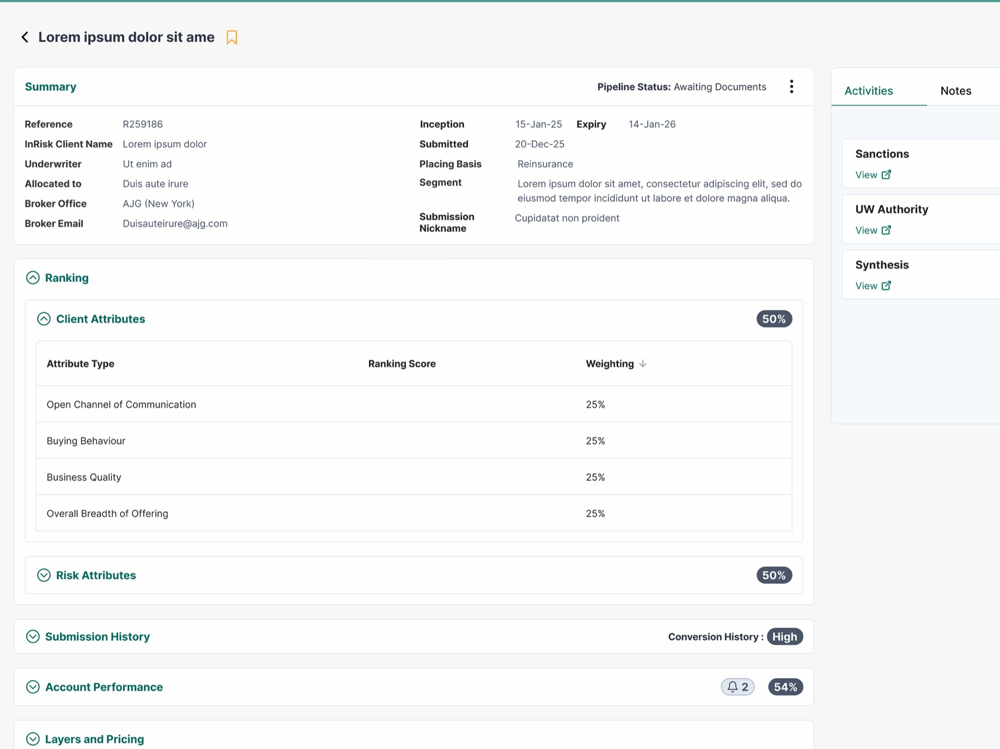
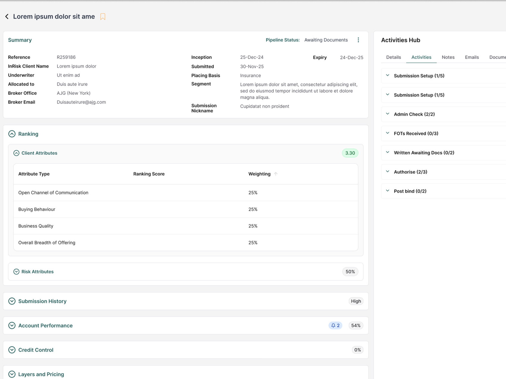
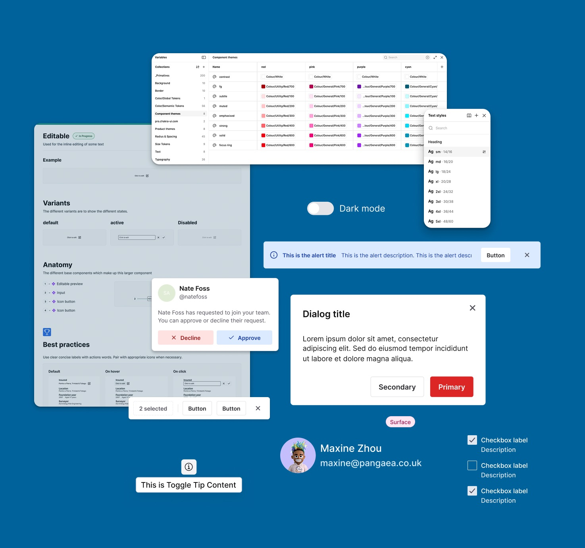
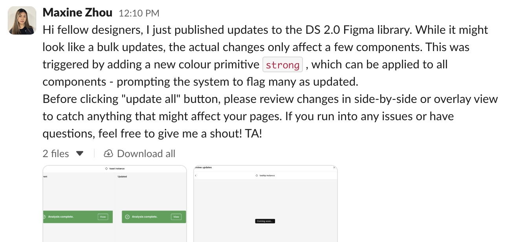
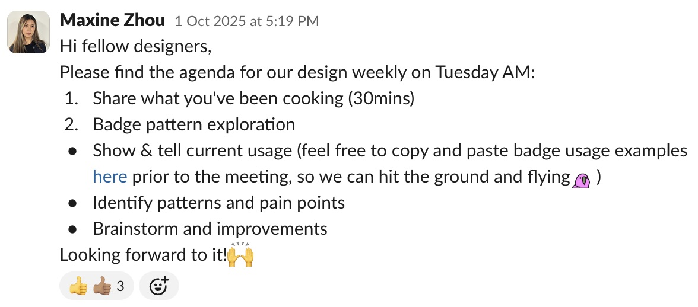

Enterprise Design System Migration Challenge
Led design system migration across a 16-product insurance ecosystem, cutting custom components by 94% and establishing governance across three design agencies.

Our Design Team
Design System Designer (me)
+ Design Manager
Timeline
March – December 2025
(10 months)
My Core Deliverables
- Four products migrated, with three in active progress
- Design library fully built, aligned with Storybook
- Documentation and governance frameworks established
- Design team culture transformed from siloed to collaborative
- Client set up to scale the system independently after the engagement ended
Impact

The Challenge
The client operated 16+ products built by multiple contractors, with significant operational challenges:
- 83% of design work required custom components, due to limitations of the existing design system
- Three separate design agencies worked in silos with inconsistent practices
- Designers skipped collaboration meetings and worked independently
- Fragmented user experiences across the product portfolio
- No clear governance on when or how to extend the design system
What my role brought
- Build and organise the design library and documentation
- Provide design system services and support to designers across agencies
- Establish governance processes for consistent adoption
- Lead pilot migration to demonstrate value and approach
- Transform team culture from siloed to collaborative


Foundation Building
- Built the Design Library covering the full product ecosystem
- Tokenised design foundations and wrote component documentation
- Established the cleaned-up version of Storybook as the single source of truth
- Provided designer support infrastructure across all three agencies


Governance & Quality Assurance
- Conducted UX audits and regular design check-ins across agencies to identify drift
- Documented an Exception Framework for when deviations make sense — balancing system integrity with design flexibility
- Created a 3–4 week component prioritisation pipeline
- Hosted Pattern Workshops across agencies to identify reusable patterns


The challenge I faced at Phase 2
What happened
While reviewing some mockups, I noticed many components were heavily customised — spacing, padding, and text weights all differed from the design system.
The tension
Product designers wanted to preserve user familiarity. The design system manager questioned the purpose of migration if the visuals remained unchanged.
What I did to solve the underlying conflict
- Clarified intent: migration = technical adoption + gradual alignment, not forced visual conformity.
- Defined a path forward: Phase 1 — design system components with overrides; Phase 2 — reassess after research and user acceptance testing.
- Process improvement: proposed an Exception Framework to document justified divergences from the design system.

Strategic Migration
We ran a low-risk pilot on a simple product to validate the process and build team confidence. Then we migrated the essential product to showcase impact.
During migration we fixed a number of UX issues, applied semantic tokens, and improved predictability with a unified visual language.
Result: 35% → 2% custom components.
Scaling & Enablement
- Transformed siloed agencies into a collaborative community
- Completed four product migrations, with three in progress
- Client equipped to continue independently with established processes



Impact for the business
- Drastic reduction in design and handoff time as design system coverage increased
- Migration approach proven through a pilot that other teams can replicate
- The team now owns and evolves the design system together
Reflection and learnings
- Design system migration is as much about people and process as components. Building trust among design teams by providing support proactively is the key.
- I came to understand the importance of change management: balancing consistency with designers' needs.
- Stakeholder communication and systems thinking are essential.
- Finally, I learnt to choose the battle. We paused migration on one product with fewer than 10 active users — its designers were reluctant to migrate in the way we suggested, and it was time-consuming to re-onboard them at every design check-in.